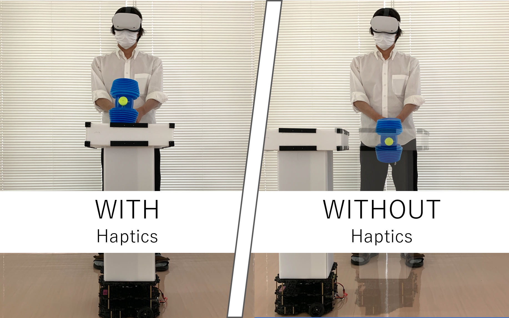

Boomshin: 触覚提示の有無を時間的に変動させるVRゲーム体験の評価
OverView
ロボットで構築された遭遇型触覚ディスプレイを用いてバーチャル空間内の物体（敵）の触覚提示の有無を時間的に断続的に切り替えることでVRゲーム体験にポジティブな影響を与えるシステム
Image


Concept
遭遇型触覚ディスプレイを用いて，VR空間内の物体の触覚提示の有無を時間的に切り替えることが，VRゲーム体験に及ぼす影響を調査した．触覚提示がある物体・ない物体をそれぞれ実体・分身と名付け，両者の時間的な出現パターンを独立変数とし，VRゲーム体験の印象の変化を評価した．その結果，実体あるいは分身のみの場合よりも，両者が混在している場合のほうが，ゲームにおける驚きおよび満足感が高くなることが明らかになった．また，体験中に実体の出現頻度を急激に変化させることで，より大きな印象変化を提示可能であることが明らかになった．
Future Work
今後は空間的な提示パタンや触覚刺激提示手法の違いによる影響について明らかにしたいと考えている．特に今回は叩くという動作なため力覚ともいえる衝撃の強い体験であった。一方で、ヒューマンスケールが異なるような場合でも研究の知見が適用できるかを明らかにしたい。具体的には卓上で遭遇型触覚ディスプレイを提示可能なスワームロボティクス等を用いたいと考えている。
Publication
- ・Tetsuro Okuya, Amane Tai, Yasuto Nakanishi. (2022). Boomshin: Evaluation of VR Game Experiences with Switching the Presence of Haptic Feedback. ICAT-EGVE 2022 – Posters and Demos. https://doi.org/10.2312/EGVE.20221311.
- ・奥谷 哲郎, 田井 普, 中西 泰人. (2022). Boomshin: 触覚提示の有無を時間的に変動させるVRゲーム体験の評価. インタラクション2022論文集. http://www.interaction-ipsj.org/proceedings/2022/data/pdf/4P01.pdf.
Tools
- Unity：VR映像の描画
- ROS2（python）：ロボット(TurtleBot3)の動作
Credit
- 田井 普 - Hardware / Software
- 奥谷哲郎 - Hardware / Software
Production Time
- 制作日時：2021年9月-2022年2月
- 製作期間：6ヶ月